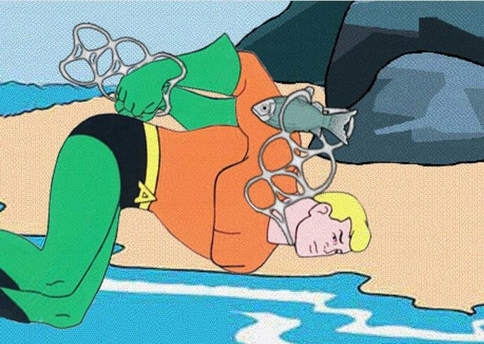
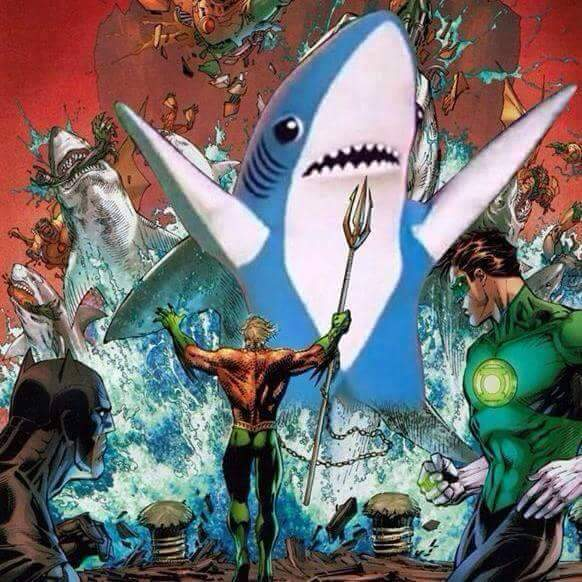

Biography/History
Golden Age
Aquaman's first origin story was presented in flashback from his debut in More Fun Comics #73 (November 1941), narrated by the character himself:
The story must start with my father, a famous undersea explorer — if I spoke his name, you would recognize it. My mother died when I was a baby, and he turned to his work of solving the ocean's secrets. His greatest discovery was an ancient city, in the depths where no other diver had ever penetrated. My father believed it was the lost kingdom of Atlantis. He made himself a water-tight home in one of the palaces and lived there, studying the records and devices of the race's marvelous wisdom. From the books and records, he learned ways of teaching me to live under the ocean, drawing oxygen from the water and using all the power of the sea to make me wonderfully strong and swift. By training and a hundred scientific secrets, I became what you see — a human being who lives and thrives under the water.
In his early Golden Age appearances, Aquaman can breathe underwater and control fish and other underwater life for up to a minute. Initially, he was depicted as speaking to sea creatures "in their own language" rather than telepathically, and only when they were close enough to hear him (within a 20-yard radius). Aquaman's adventures took place all across the world, and his base was "a wrecked fishing boat kept underwater," in which he lived.[8]
During his wartime adventures, most of Aquaman's foes were Nazi U-boat commanders and various Axis villains. The rest of his adventures in the 1940s and 1950s had him dealing with various sea-based criminals, including modern-day pirates such as his longtime archenemy Black Jack, as well as various threats to aquatic life, shipping lanes, and sailors.
Aquaman's last appearance in More Fun Comics was in issue #107, before being moved along with Superboy and Green Arrow to Adventure Comics, starting with issue #103 in 1946.
Silver Age
Aquaman's adventures continued to be published in Adventure Comics through the 1940s and 1950s, as one of the few superheroes to last through the 1950s in continuous publication. Starting in the late 1950s, new elements to Aquaman's backstory were introduced, with various new supporting characters added and several adjustments made to the character, his origins, his powers, and persona. The first of these elements was the story "Aquaman's Undersea Partner" in Adventure Comics #229 (October 1956), where his octopus sidekick, Topo, was first introduced. This and subsequent elements were later, after the establishment of DC's multiverse in the 1960s, and attributed to the Aquaman of Earth-One.
In Adventure Comics #260 (May 1959) and subsequent Silver Age comics, it was revealed that Aquaman was Arthur Curry, the son of Tom Curry, a lighthouse keeper, and Atlanna, a water-breathing outcast from the lost, underwater city of Atlantis. Due to his heritage, Aquaman discovers as a youth that he possesses various superhuman abilities, including the powers of surviving underwater, communication with sea life, and tremendous swimming prowess. Eventually, Arthur decided to use his talents to become the defender of the Earth's oceans. It was later revealed that he had, in his youth, adventured as Aquaboy and one occasion, met Superboy, Earth's only other publicly active superpowered hero at the time.[9] When Arthur grew up, he called himself "Aquaman".
It was later revealed that after Atlanna's death, Tom Curry met and married an ordinary human woman and had a son named Orm Curry, Aquaman's half-brother. Orm grew up as a troubled youth in the shadow of his brother, who constantly bailed him out of trouble with the law. He grew to hate Aquaman not only for the powers that he could never possess but also because he believed that their father would always favor Aquaman. Orm disappeared after becoming an amnesiac and would resurface years later as Aquaman's nemesis, Ocean Master.[10]
Aquaman's ability to talk with fish eventually expanded to full-fledged telepathic communication with sea creatures even from great distances. He was also retroactively developed a specific weakness akin to Superman's vulnerability to kryptonite or Green Lantern's vulnerability to the color yellow: Aquaman had to come into contact with water at least once per hour, or he would die (prior to this story Aquaman could exist both in and out of water indefinitely.)[11]
Allies and foes
Aquaman was included in the Justice League of America comic book series, appearing with the team in their very first adventure,[12] and was also a founding member of the team.[13] Aquaman took part in most of the 1960s adventures of the superhero team.
Aquaman's supporting cast and rogues gallery soon began to grow with the addition of Aqualad, an outcast, orphaned youth from an Atlantean colony whom Aquaman takes in and begins to mentor.[14] Aquaman later discovered the submerged fictional city of New Venice,[15] and which also becomes Aquaman's base of operations for a time.[16]
Aquaman is recognized as the son of Atlanna and is later voted to be the King after the death of the former regent, who has no heirs.[17] By this time Aquaman had met Mera,[18] a queen from a water-based dimension, and marries her shortly after he had become king.[17] They soon have a son, Arthur, Jr. (nicknamed "Aquababy").[19]
The 1960s series introduced other such archenemies as the Ocean Master (Aquaman's amnesiac half-brother Orm),[20] Black Manta,[21] the Fisherman,[22] the Scavenger,[23] and the terrorist organization known as O.G.R.E..[24] Other recurring members of the Aquaman cast introduced in this series include the well-meaning but annoying Quisp (a water sprite);[25] Dr. Vulko, a trustworthy Atlantean scientist who became Aquaman's royal adviser and whom Aquaman eventually appoints to be king after leaving the throne himself;[26] and Tula (known as "Aquagirl"), an Atlantean princess who was Aqualad's primary love interest.[27]